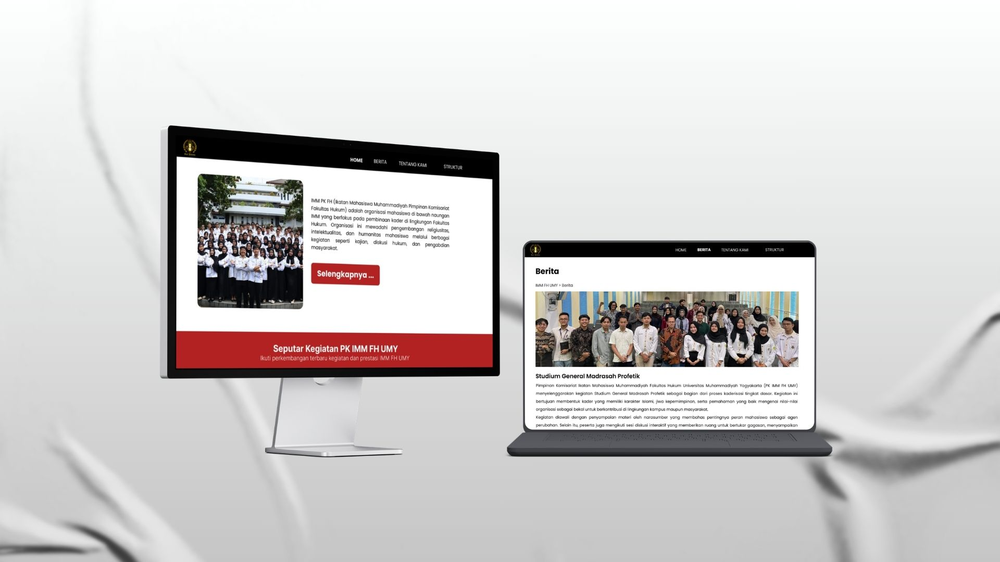
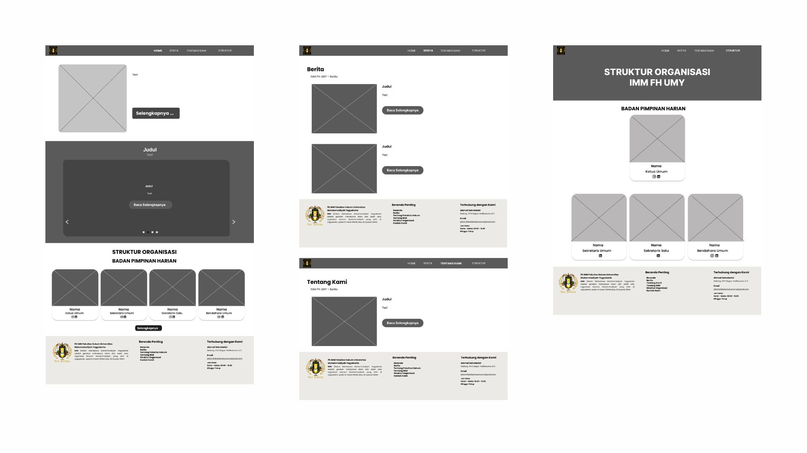
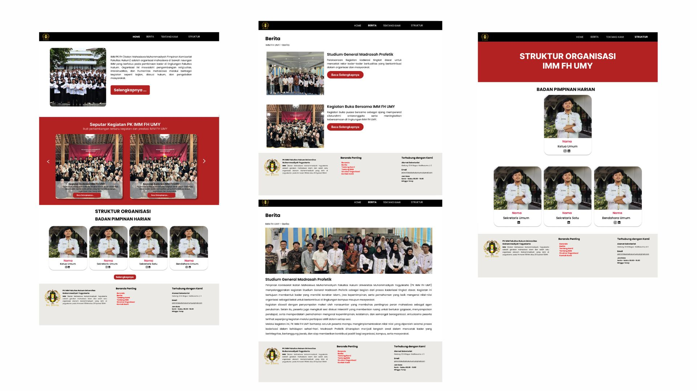

Official web platform design for student organization information hub.

The IMM FH UMY website was designed as an organizational information platform to deliver the organization's profile, news, management structure, and contact information to students of the Faculty of Law, Universitas Muhammadiyah Yogyakarta. The website serves as a centralized digital hub that allows students to access organizational updates and resources in a structured and accessible manner.
Wireframes were created to define the layout, content hierarchy, and navigation flow of the website. Each page was mapped out to ensure that key information such as the organizational profile, news, management structure, and contact details would be presented in a clear and intuitive manner for student visitors.

The final design features a clean and professional interface that aligns with the identity of the Faculty of Law. The layout prioritizes readability and easy navigation, ensuring that students can quickly find the information they need about the organization.

This project provided hands-on experience in designing an organizational website, from wireframing to interface design using Figma. Additionally, the design was implemented using WordPress, giving me a deeper understanding of how designs are applied in a real-world website. The process taught me the importance of balancing visual design with functional requirements, ensuring that the final product not only looks professional but also serves its purpose effectively as an information hub for students.